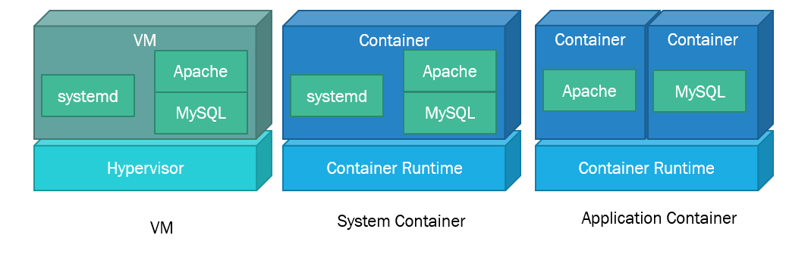

コンテナ勉強会 概論編
コンテナ型仮想化
コンテナ型仮想化とは，軽量な仮想化方式の1つである． VMが1つのハードウェアを多重化して複数のハードウェアに見せかけたりするのと比べ，コンテナはOSを仮想化し，あたかも異なる複数のOSのようなものが実行されているように見える機構である．コンテナ内ではOSの起動のようなものは行わず，カーネルなどはホストOSのものを用いるため，VMと比べると起動は高速である．
注意: コンテナ型仮想化では，ホストのOSカーネルを使ってコンテナを作成する．そのため，ホストOSと異なるOSのコンテナを作成することはできない．LinuxではLinux, WindowsではWindowsのコンテナを作成することしかできない．
コンテナは様々な用途で利用され，Webサービス等だけではなく組み込み機器，Machine Learningなどでも利用されることが増えてきた． 誤解を恐れないでいうと，コンテナが向いていないワークロードをベアメタルかVMを用いて運用するという方向になりつつある．
コンテナが向いていない要件
- カーネルモジュールなどが大きく影響するシステム
- レスポンスタイムがシビアなシステム(仮想NICなどを経由することが多くなるため)
- パブリッククラウドなどにおけるマルチテナンシー(複数人が共有する環境)
コンテナはリソースの制限や分離(isolation)に関して言えば，ハードウェアレベルで制御することができないので，VMと比べ弱い．そのためセキュリティやパフォーマンスなどの文脈でパブリッククラウドなどのサービスで利用する際はいくつか注意する必要がある．
コンテナの歴史
コンテナの起源は1970年代に登場したUNIXのchrootシステムコールに遡る[1]． chrootシステムコールはシステムのルートディレクトリを変更するシステムコールである．これにより簡易的な隔離環境を作ることができ，HTTP Serverなどで用いられ，ディレクトリトラバーサルなどの対策に使われた．
2000年にはFreeBSD jail が生まれ，chroot以外にも様々な隔離機能が搭載され，この跡に生まれてくるコンテナ型仮想化に踏襲された．
2006年頃，Linux 2.6にてnamespace(後述)という機能が実装された． この機能を用いて登場したのがLXCやDockerといった現代のコンテナ型仮想化ソフトウェアである．
Linuxコンテナを構成する機能
Linuxにおけるポピュラーなコンテナは以下の機能によって実装されている．
Namespace
Linux NamespaceはLinuxカーネルのリソースを分離するための機構．unshareシステムコールやcloneシステムコールでNamespaceを分離することができる．
Namespaceの種類
- PID Namespace:
Process IDを分離することができる．これにより，ホストのOSのプロセスの状態と関係なくコンテナ内のPIDは1からスタートする．
psコマンドなどの結果が変わる． - Network Namespace ネットワークインタフェースの情報をホストから分離する．コンテナ内からホストのNICの情報をみることができなくなる．ホストとの疎通もできなくなるため，仮想Ethernetなどの構築が必要
- UTS Namespace: UTSを分離する． これによりコンテナにホストOSと異なるホスト名をつけることができる．
- Mount Namespace: マウントしているファイルを分離することができる．
- User Namespace: UID, GID, Capabilityを分離する．コンテナ外の一般ユーザをコンテナ内のrootユーザにマッピングすることができるようになる．
- Time Namespace: コンテナの中のタイムゾーンをホストと異なるものが使用できる
Cgroups
CgroupはLinuxカーネルのリソースの使用を制限する機能．プロセス群のCPU, RAM, Disk IO, Network IOなどのハードウェア資源の使用量やプロセスの生成数などを制限することができる．
Linuxにおけるコンテナの実装は非常にシンプルであり，C言語で数百行程度で記述することができる．
余談1. Bashで作るコンテナ
mkdir rootfs
docker export $(docker create ubuntu:20.04) | tar -C rootfs -xvf -
unshare --mount --uts --net --pid --user --fork /bin/bash
chroot rootfs /bin/bash
mount -t proc proc /proc
psコマンドでプロセスが隔離されていることを確認しよう
余談2. C言語で作るコンテナ
コンテナのミニマム実装の例: c2
コンテナの分類
アプリケーションコンテナ
DockerやCRI-Oなどで用いられるコンテナはアプリケーションコンテナと呼ばれる． アプリケーションコンテナは単一関心事の原則(Single Concern Princile)という考え方を採用しているコンテナである． シンプルに表現すると，1つのコンテナ内で実行するアプリケーションを1つに限定するという原則である． これにより，コンテナ内のアプリケーションの依存関係をシンプルにし，スケールが容易になるといったものである． LAMP(Linux, Apache, MySQL, PHP)でいうと，Apache(+ PHP)とMySQLを別々のコンテナとして利用し，リクエストの増加に応じてApacheのコンテナのみをスケールすることができる．
システムコンテナ
LXC(LXD), OpenVZはシステムコンテナと呼ばれるコンテナ環境である． システムコンテナとは，アプリケーションコンテナと異なり，複数のアプリケーションが動作し，実際のLinux OSと同様に動作するものである． systemdなどのinit processが動作し，複数のデーモンプロセスを動かすことが可能だ． 1つのコンテナのイメージサイズは大きいが，VMなどの構成をそのまま移行することも比較的容易である． LAMP(Linux, Apache, MySQL, PHP)を1つのコンテナで動かすようなもの．

参考文献
[1] 川口直也, コンテナ型仮想化概論, ISBN-13 : 978-4877834784